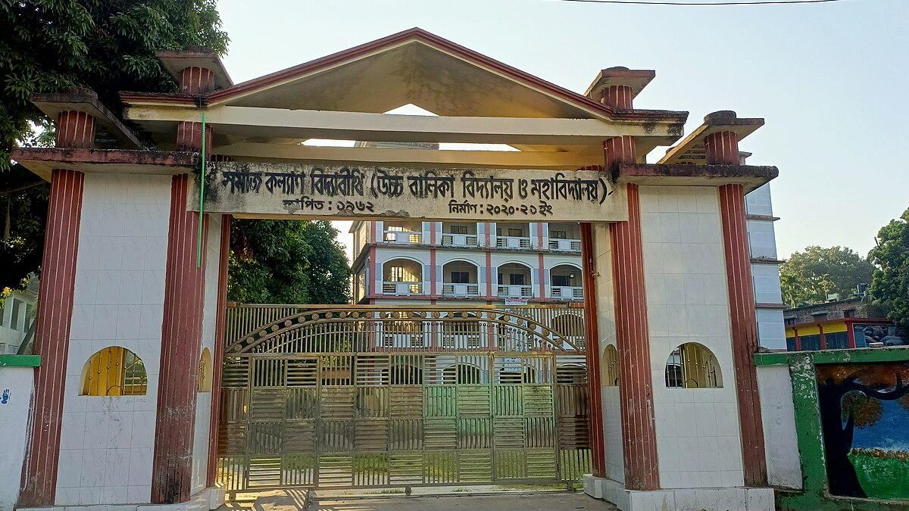
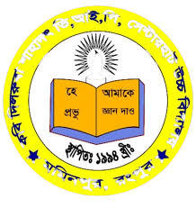

Institute

Daffodil International University

Somajkallan Bidya Bithi Girls' College

Hello! I'm Mst Ummay Mozakkira, currently pursuing my Bachelor's degree in Computer Science and Engineering at Daffodil International University. I completed my HSC from Somajkallan Bidya Bithi Girls' College, Rangpur (2021) and my SSC from Kabi Dilruba Shahadat Hossain High School and College, Rangpur (2019).
I'm passionate about Machine Learning, Software Engineering, and Data Science. I aspire to become a skilled Data Analyst who can turn data into meaningful insights and intelligent solutions. I believe in hard work, clear communication, and continuous learning as the keys to success.
In my free time, I enjoy reading books, watching movies, and exploring new things.